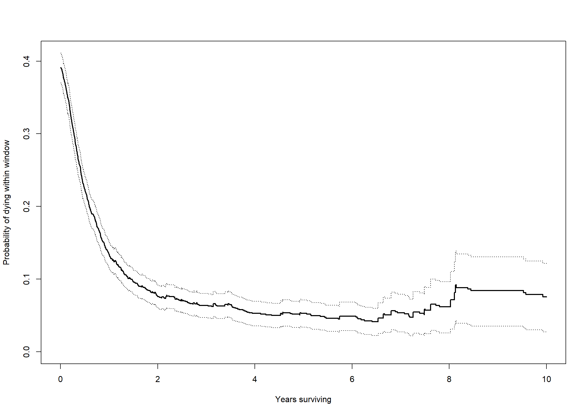

Code
require(dynpred)
data(ALL)
year <- 365.25
# Define relapse-free survival as the earliest of relapse and death
# Time to relapse (rel) and time to death (srv) are in days
# RFS will be in years
ALL$rfs <- pmin(ALL$rel,ALL$srv)/year
ALL$rfs.s <- pmax(ALL$rel.s,ALL$srv.s)
# The function Fwindow (from dynpred) is used; it takes a survfit
# object
c0 <- coxph(Surv(rfs,rfs.s) ~ 1, data=ALL, method="breslow")
sf0 <- survfit(c0)
Fw <- Fwindow(sf0,5)
# Plot first 10 years
Fw <- Fw[Fw$time<=10,]
plot(Fw$time,Fw$Fw,type="s",ylim=c(0,max(Fw$up)),xlab="Years surviving",ylab="Probability of dying within window",lwd=2)
lines(Fw$time,Fw$low,type="s",lty=3)
lines(Fw$time,Fw$up,type="s",lty=3)